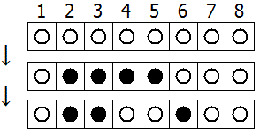

$N$ disks are placed in a row, indexed $1$ to $N$ from left to right.
Each disk has a black side and white side. Initially all disks show their white side.
At each turn, two, not necessarily distinct, integers $A$ and $B$ between $1$ and $N$ (inclusive) are chosen uniformly at random.
All disks with an index from $A$ to $B$ (inclusive) are flipped.
The following example shows the case $N = 8$. At the first turn $A = 5$ and $B = 2$, and at the second turn $A = 4$ and $B = 6$.

Let $E(N, M)$ be the expected number of disks that show their white side after $M$ turns.
We can verify that $E(3, 1) = 10/9$, $E(3, 2) = 5/3$, $E(10, 4) \approx 5.157$ and $E(100, 10) \approx 51.893$.
Find $E(10^{10}, 4000)$.
Give your answer rounded to $2$ decimal places behind the decimal point.
solve(n=3, m=2) → █solve(n=10000000000, m=4000) → █Solution pending... the mathematician is still thinking.
Nothing here yet - come back when the dust has settled.